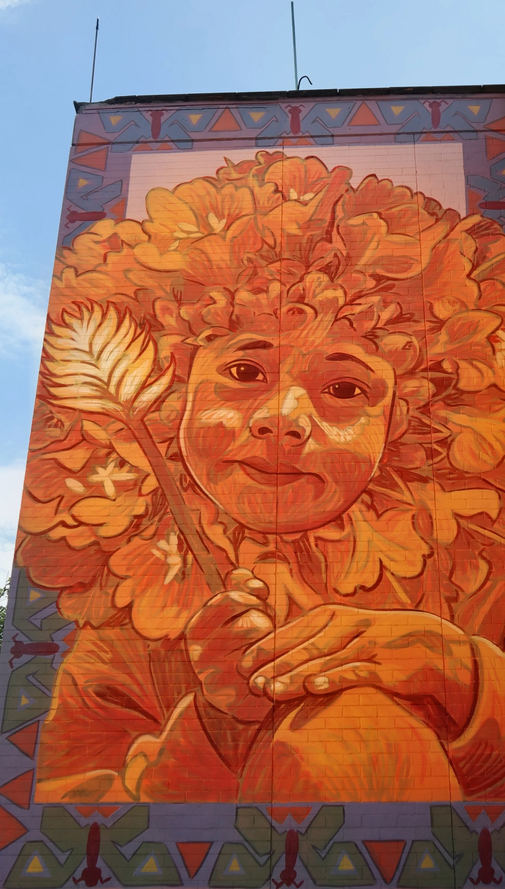
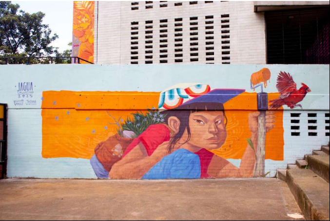
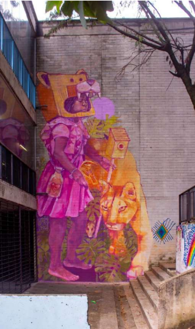


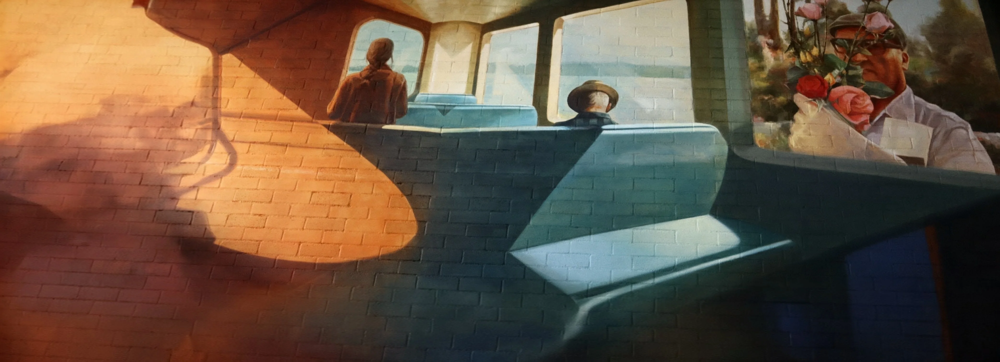
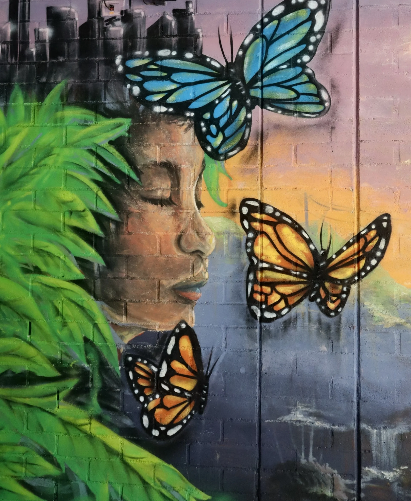
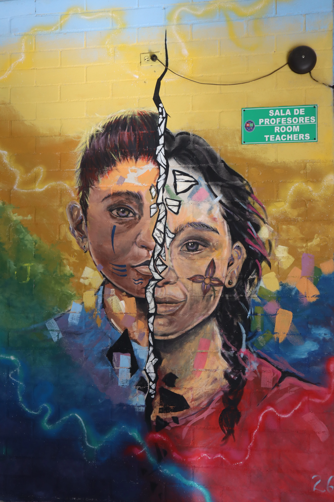
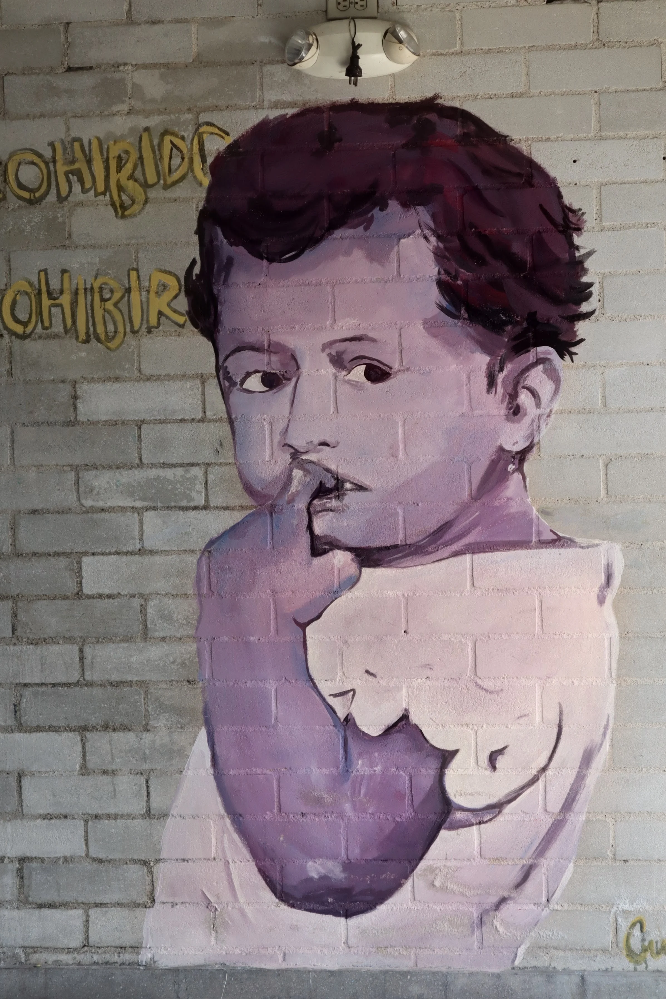

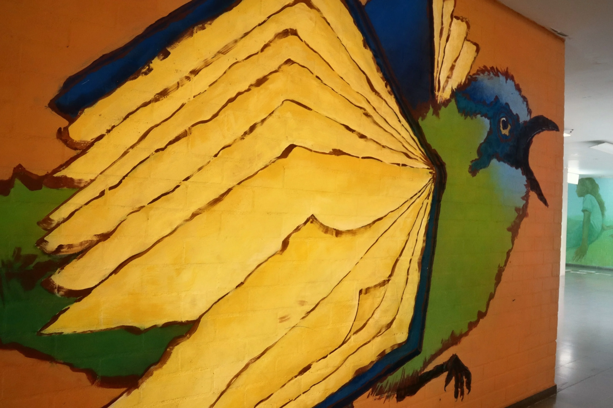

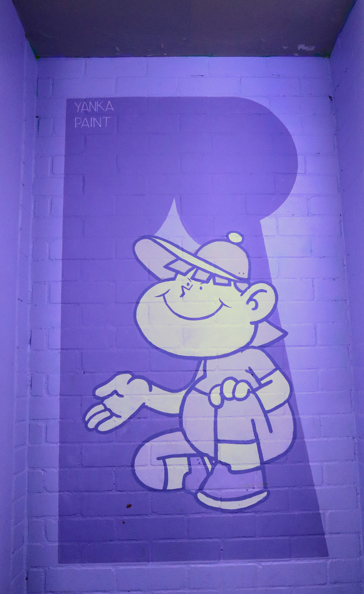
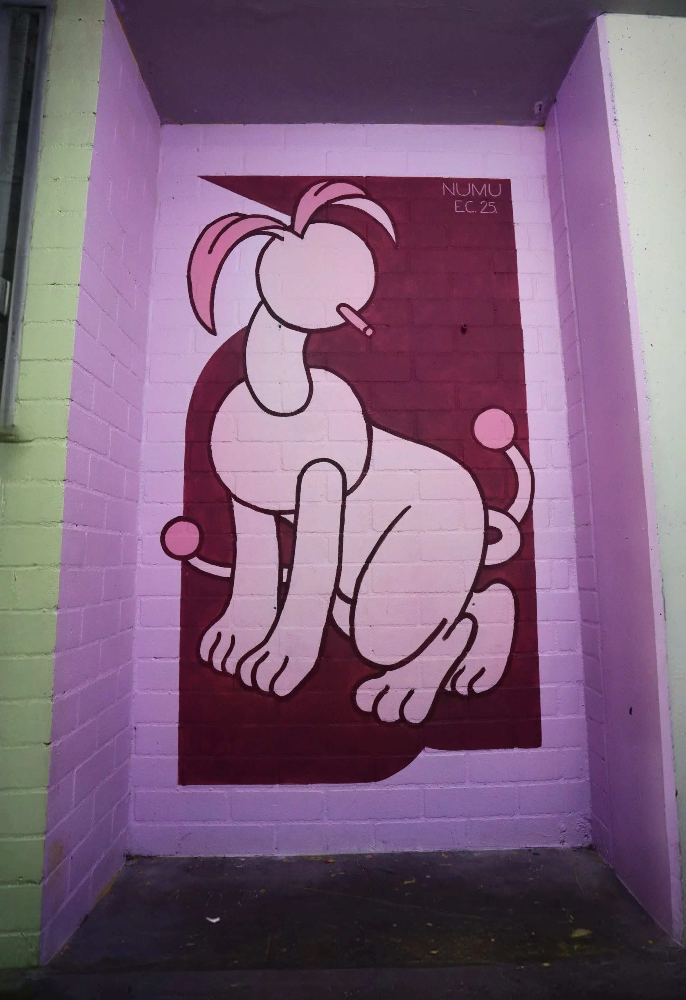
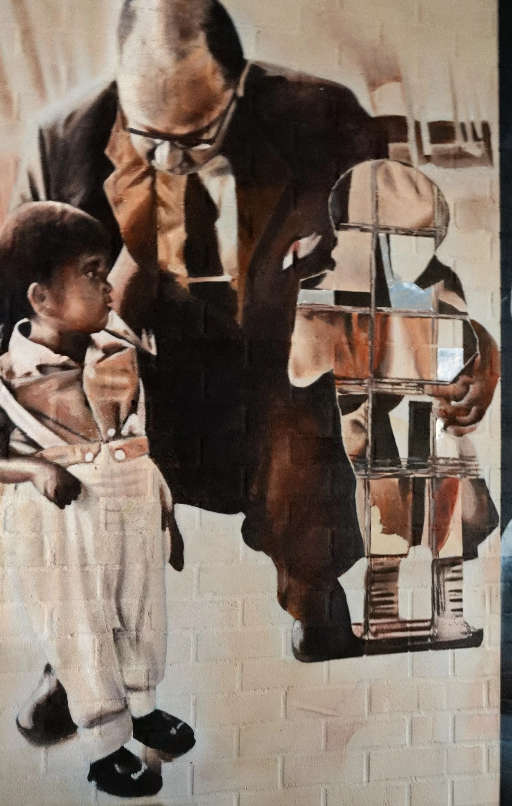
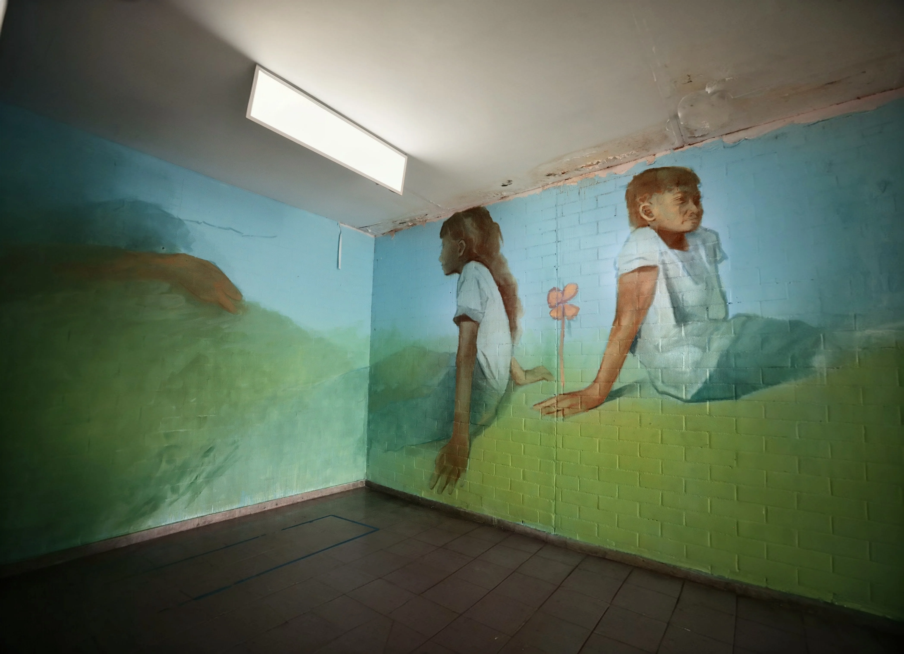

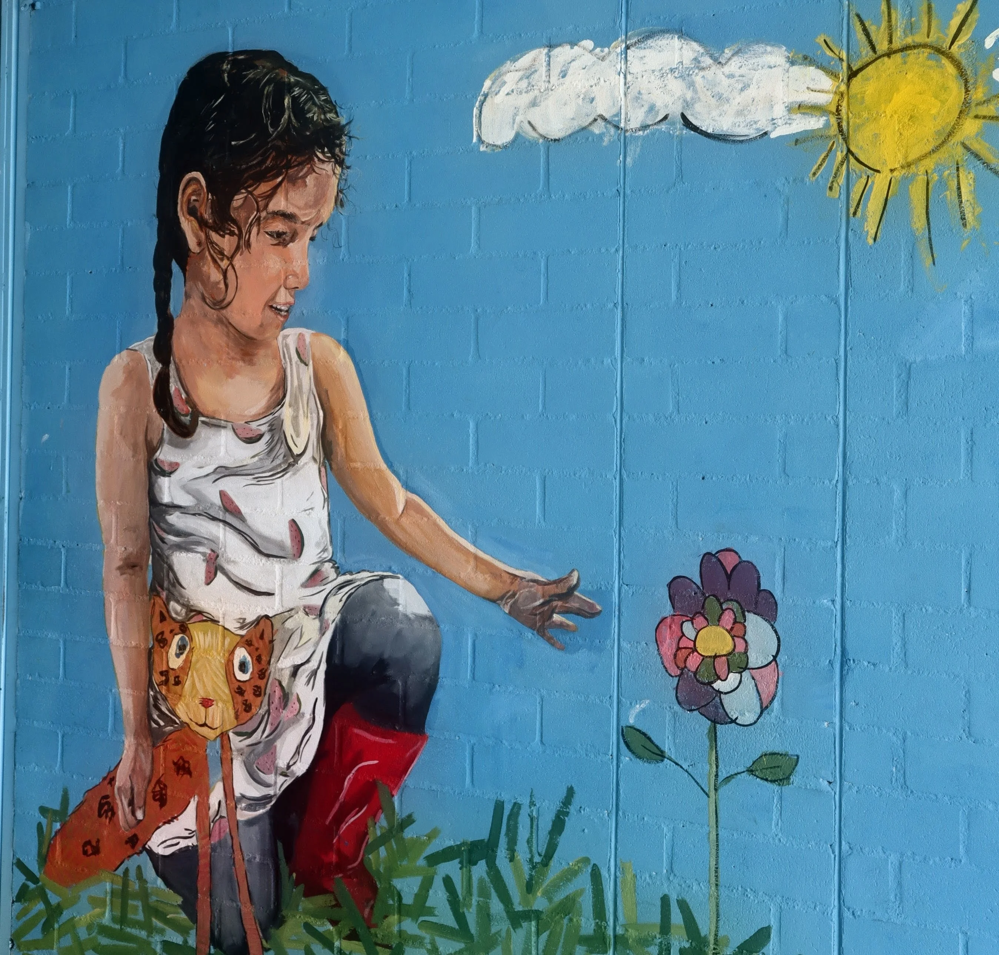
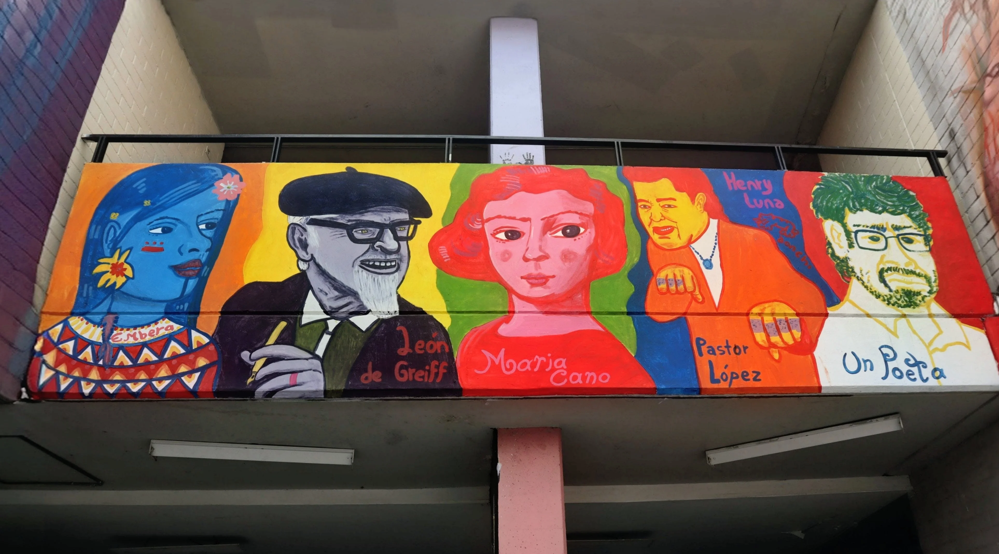
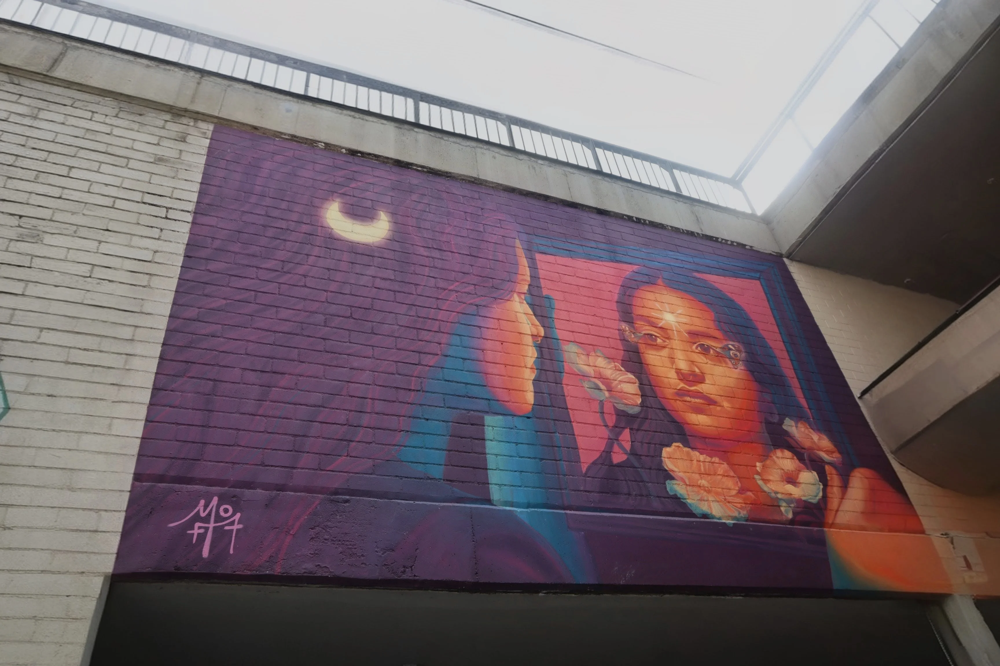


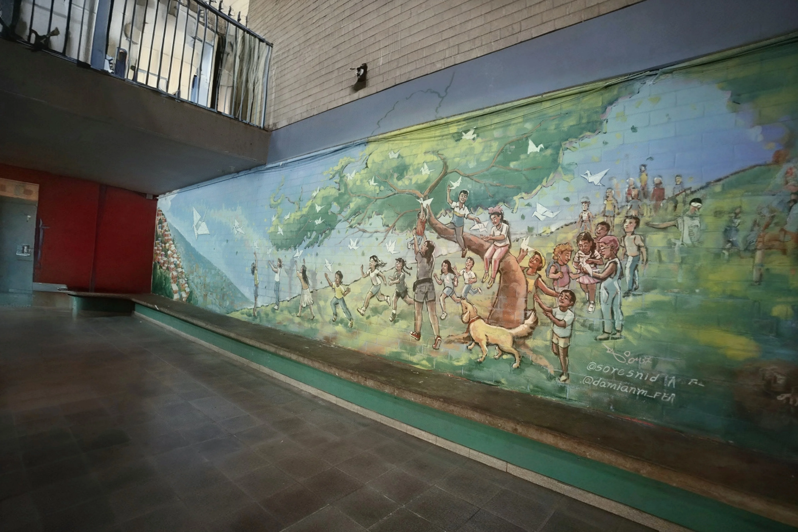
Murales, fotografías y espacios que conservan la memoria y la identidad de nuestra comunidad.
El Museo Escolar de la I.E. Héctor Abad Gómez es un espacio pedagógico y cultural vivo, conformado por 24 murales realizados por 14 artistas internacionales, nacionales y locales. Cada obra es un acto de memoria, resistencia e identidad.
Los murales se integran al currículo de la institución como recursos didácticos para explorar temas históricos, culturales y sociales, permitiendo a los estudiantes conectar el conocimiento académico con su realidad.
Cada mural narra historias de estudiantes migrantes, comunidades indígenas Emberá, afrocolombianos y personas en situación de desplazamiento. La diversidad cultural de la institución se vuelve visible y celebrada en sus paredes.
Inspirado en el legado de Héctor Abad Gómez, el museo actúa como un espacio de justicia restaurativa simbólica donde la comunidad educativa elabora colectivamente el pasado y construye un futuro de convivencia.
Estudiantes de grados 8° a 11° se forman como mediadores culturales que guían recorridos, activan los murales como escenarios de diálogo y construyen sentido de pertenencia y agencia cultural en el territorio.
















¿Qué quieres explorar?